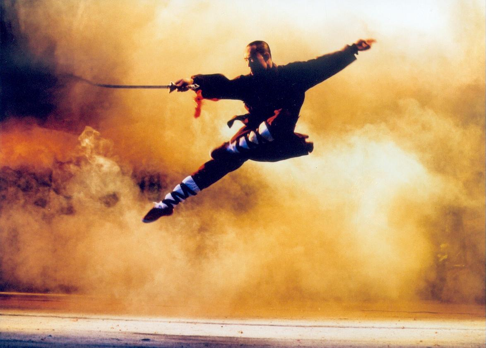
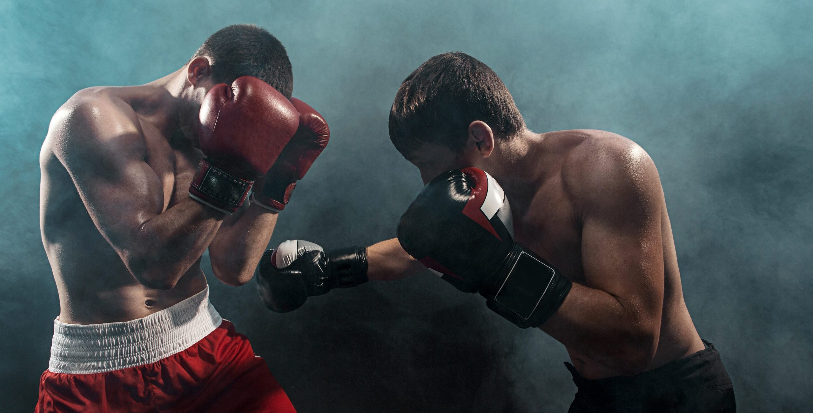
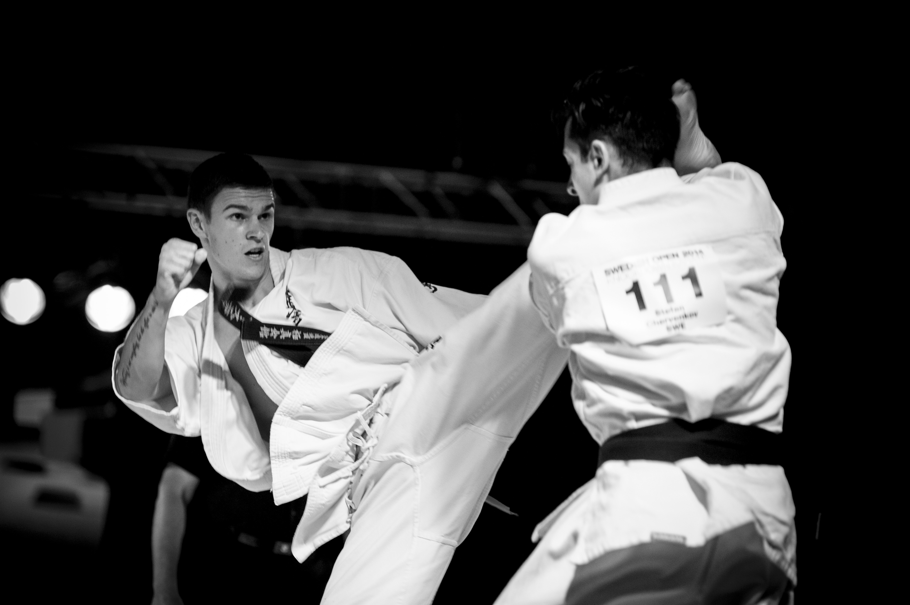
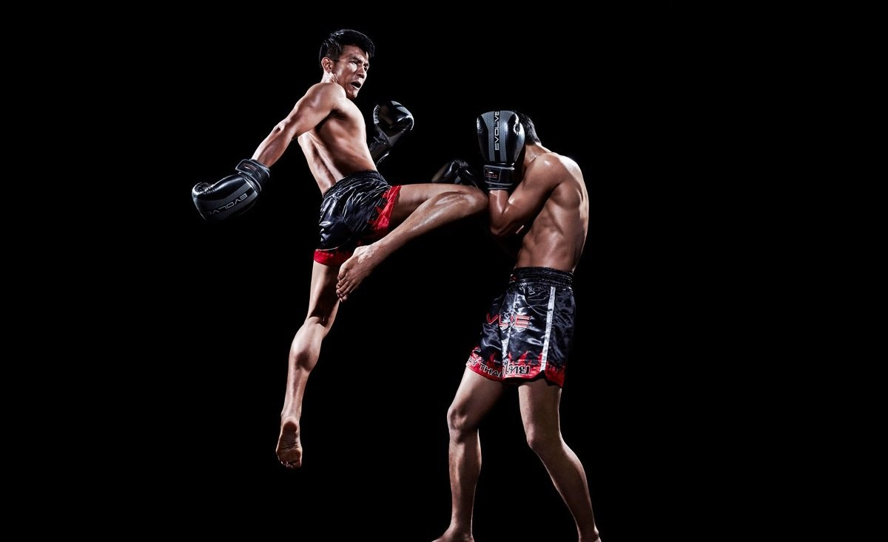

O Kung Fu tem suas raízes na antiga China e está intimamente ligado à história e cultura do país.
As origens exatas do Kung Fu são difíceis de precisar, mas acredita-se que tenha se desenvolvido ao longo de milênios,
influenciado por diversas fontes, incluindo técnicas de luta indígenas e práticas de meditação budistas e taoístas.
Durante séculos, monges em templos nas montanhas chinesas desenvolveram e aprimoraram essas técnicas,
dando origem a muitos dos estilos de Kung Fu que conhecemos hoje.
Por: André Francelino
Ler Mais

O boxe tem uma história que remonta a civilizações antigas, mas o esporte moderno que conhecemos
hoje se desenvolveu na Inglaterra durante o século XVIII.
O boxe foi formalizado com regras e regulamentos que governam a luta dentro de um ringue.
Ao longo dos séculos, o boxe evoluiu para um esporte popular e altamente técnico, com uma rica tradição e uma comunidade global de praticantes e fãs.
Por: André Francelino
Ler Mais

O Karatê teve suas origens na ilha de Okinawa, no Japão, e é uma fusão das artes marciais locais de Okinawa
com influências da China e do Japão continental.
Antes de se tornar formalmente conhecido como Karatê, essas técnicas eram chamadas de "te" (mão) em Okinawa. Com o tempo,
o "te" local evoluiu para o "karate" que conhecemos hoje, onde "kara" significa vazio e "te" significa mão,
simbolizando a ideia de "mão vazia" ou desarmada.
Por: André Francelino
Ler Mais

O Jiu-Jitsu tem suas raízes no Japão, onde foi desenvolvido ao longo de séculos como uma forma de defesa
pessoal baseada em técnicas de luta corpo a corpo. No final do século XIX e início do século XX,
o Jiu-Jitsu foi introduzido no Brasil por mestres japoneses, como Mitsuyo Maeda, que ensinaram seus
conhecimentos a Carlos Gracie e outros praticantes locais. No Brasil, o Jiu-Jitsu sofreu uma evolução
significativa, especialmente pelas mãos da família Gracie, dando origem ao Brazilian Jiu-Jitsu, que se concentra em técnicas de solo e finalizações.
Por: André Francelino
Ler Mais

O Muay Thai tem uma história antiga que remonta a séculos na Tailândia.
Originalmente, era uma forma de luta utilizada pelos guerreiros tailandeses em batalhas e conflitos.
Ao longo do tempo, o Muay Thai evoluiu para um esporte formalizado com regras e técnicas específicas.
É uma parte importante da cultura tailandesa e é considerado um símbolo de identidade nacional.
Por: André Francelino
Ler Mais